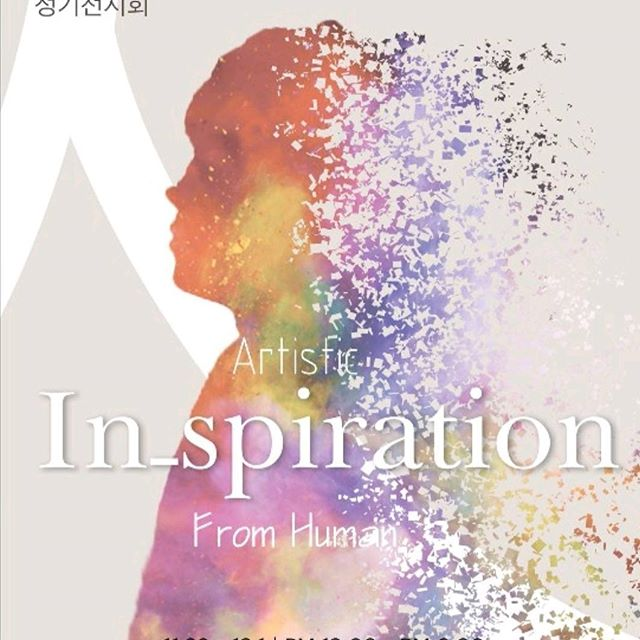

Work Experience
Information Staff
Incheon Pentaport Rock Festival
August 11-13, 2017
Responsible for setting timetables, leaflets, and other tools, and giving information.
Artist
Soongsil Univeristy
October 25-27, 2017
Participated as an artist for the school exhibition 'Inspiration'. Responsible for graphic design and goods
Key Contributions :
Education
Soongsil University
March 2017- December 2018
Bachelor of Global school of Media
Completed a year of full-time course
Vorarlberg University of Applied Sciences (FHV)
February 2018 - July 2018
Bachelor of Inter Media, 2018
Student exchange programme
The Hague University of Applied Sciences(De Haagse Hogeschool)
Present
Bachelor of UX Design, 2018
Full-time programme
School Projects
Skills Lab
Programming Bootcamp
It's all about what I learned and made during the week of Programming Bootcamp.
There are five main artworks showing my creativity with diverse types of interactions between humans and the program.
Made with Processing.
Design & Creativity
What does design mean to you?
This project tells design should be regarded as something more than what we see.
Within my handmade artworks, you will be able to explore the process of design projects and my insights and ideas towards the tasks.
Skills Lab
Webpage Design
These days, people are easily exposed to various websites and decide whether they will keep using the website or not based on how it looks like.
This project is aimed to learn how to make the layout more attractive and use diverse softwares, such as Adobe photoshop and illustrator.
Showcase
Processing Artworks
There's the main thought behind my artworks-How can I connect humans and computers?
Since I have this curiousity, I've digged into the programme called 'Processing'.
For the week of Programming Bootcamp, I could expand my imagination into digital environment and it gave me another motivation to develop more media art programmes.
There are five artworks with different meanings and indications.
The first artwork shows my personality and objects or influences around me.
Whenever you start the programme, lines will be randomly colored with different thickness.
In addition, I tried to show my abstract aspect of myself through the shapes on the screen, and the letters indicate my name.
This is the second artwork, and I came up with an idea that how I can make a pong game in an attractive and interesting way?
Therefore, Other two bars are added, and the changing color function is added.
Since the usage of additional functions are not allowed, I made up my mind to end the game by making the color of the ball same as the background so that a player cannot recognize the ball.
What do people do when they are affected by something around them?
On the third day of Bootcamp, I was wearing a wool sweater, which I like the most, and kept listening to annoying music
The clothes and the music inspired me to combine sound and the material on the screen.
In order to make the programme interactive, a user have to blow into a mic, and there will be some changes in the pattern.